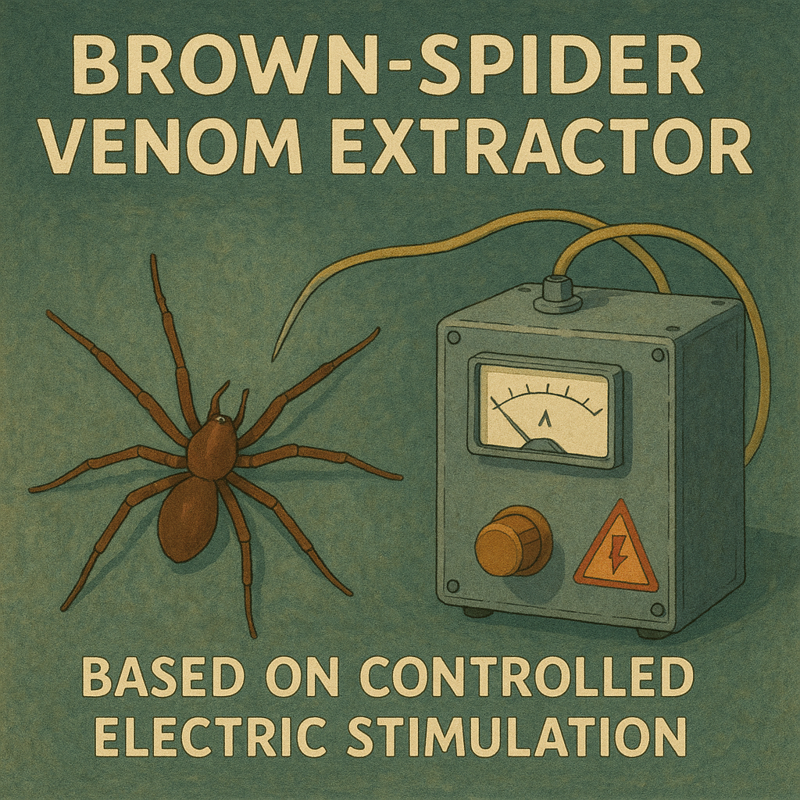
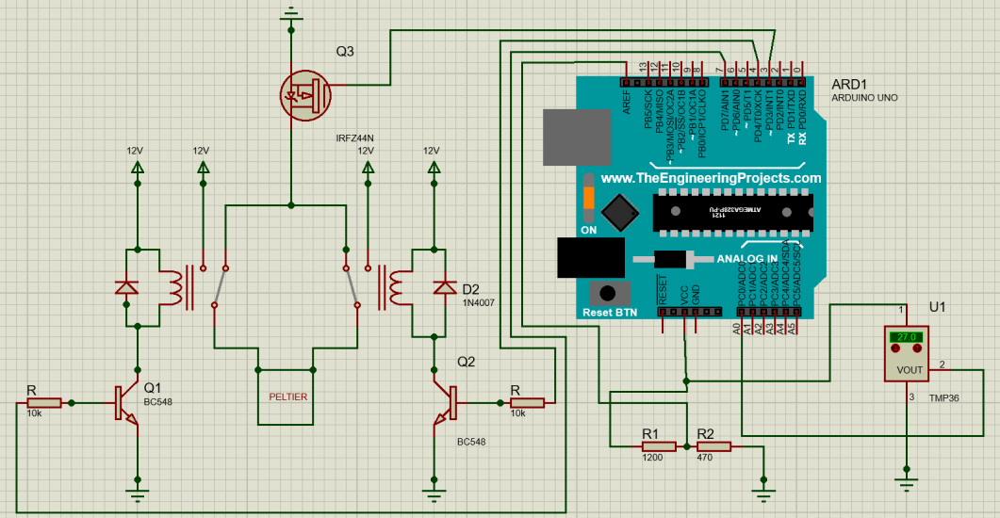
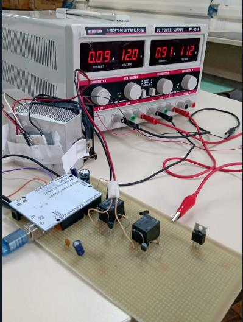
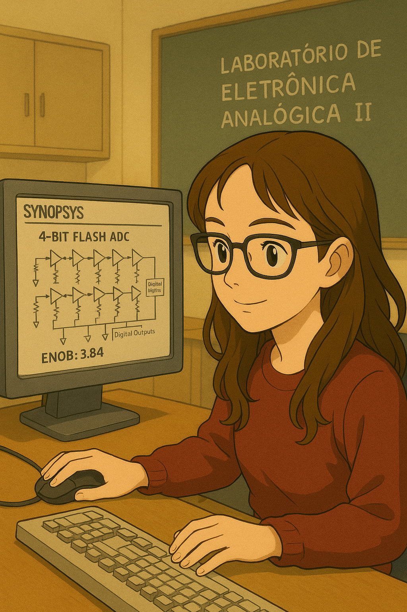

About me
I am currently pursuing a PhD thesis at CEA-Leti, entitled “3D Hybrid Synapses for Frugal and Adaptive Embedded AI”. The thesis is affiliated with Université Grenoble Alpes and the EEATS doctoral school (Électronique, Électrotechnique, Automatique et Traitement du Signal).
I hold a Bachelor’s degree in Electrical Engineering from the Federal University of Paraná, with a focus on Electrotechnics/Electronics and Telecommunications. Between 2023 and 2025, I took part in the BRAFITEC–CAPES exchange program, through which I completed the final years of my studies at ENSICAEN (École Nationale Supérieure d’Ingénieurs de Caen). There, I graduated with a Master’s degree in Engineering, specializing in Physics and Embedded Systems.
In 2024, I completed a four-month internship at GANIL (Grand Accélérateur National d’Ions Lourds), where I developed a system in C++ for endianness conversion of nuclear experiment acquisition data. I then carried out a six-month final-year internship at NXP Semiconductors in Toulouse, where I developed an automated platform for generating behavioral models, using Python to streamline workflows and enhance modeling efficiency.
Publications
Here I list the scientific papers I have authored or co-authored during my academic journey.
-
Machado, A. P. P.; Nypwipwy, V. B.; França, C.; Lima, E. G.
“Selective Algorithm for Expanded Group Method of Data Handling Applied to Power Amplifier Modeling”.
Journal of Integrated Circuits and Systems, vol. 17, no. 2, 2022.
PDF -
Machado, A. P. P.; Lima, E. G.
“Modelo Seletivo Aprimorado para Modelagem de Amplificadores de Potência usando GMDH”.
Seminários de Microeletrônica do Paraná (SEMiCRO), Curitiba, Brasil, 2021.
PDF -
Machado, A. P. P.; Lima, E. G.
“Algoritmo Seletivo com Diferentes Métodos de Extração para Modelagem de Amplificador de Potência Baseada em GMDH”.
Seminários de Microeletrônica do Paraná (SEMiCRO), Curitiba, Brasil, 2022.
PDF -
Machado, A. P. P.; Lima, E. G.
“Selective Algorithm for Group Method of Data Handling Applied to Power Amplifier Modeling”.
XXI Microelectronics Students Forum (SForum), Campinas, Brasil, 2021.
PDF -
Machado, A. P. P.; Lima, E. G.
“Real-valued Neural Network Based on Group Method of Data Handling Applied to Power Amplifier Modeling”.
XXII Microelectronics Students Forum (SForum), 2022.
PDF -
Machado, A. P. P.; Lima, E. G.
“Selective Method with Adapted Activation Function and Applied in Non-linear Optimization for Modeling of Power Amplifiers”.
Simpósio Sul de Microeletrônica (SIM), 2023.
PDF
About my Electrical Engineering degree
I began my Electrical Engineering studies in 2020 at the Federal University of Paraná (UFPR) and completed my degree in September 2025, with a focus on Electrotechnics, Electronics, and Telecommunications. At graduation, I received the Silver Medal for achieving the second-highest academic performance in my cohort.
Throughout the program, I was exposed to a broad range of subjects across multiple domains, including electrotechnics, electromagnetism, analog and digital electronics, telecommunications, and control systems.
Teaching Assistantship in Electrical Circuits
In the second semester of 2021, I worked as a teaching assistant for the course Electrical Circuits I, under the supervision of Professor Eduardo Lima. My responsibilities included solving exercises with the students, explaining foundational concepts, and assisting with any questions they had. The tutoring sessions were held four times a week during lunchtime, and I was responsible for teaching two of them.
Students were encouraged to attend the sessions through a bonus-point system based on participation. This experience was my first contact with teaching, and it proved to be deeply enriching, shaping the way I communicate technical ideas and support other learners.
EMJEL
I also took part, from August 2020 to April 2021, in the Electrical Engineering Junior Enterprise. A Junior Enterprise is a student-run organization that provides consulting services and real-world engineering solutions, allowing students to apply their academic knowledge in professional-level projects. At EMJEL, I worked in the commercial division, preparing proposals and defining the scope of projects. I also participated in the execution of a project involving the design of a brown-spider venom extractor based on controlled electric stimulation, developed and sold to a clinical analysis laboratory in the state of Paraná.
GICS
For three years, I carried out a Scientific Initiation program at UFPR, in the GICS group (Group of Integrated Circuits and Systems). GICS, UFPR’s research group for the design of integrated circuits and systems, focuses on research and development of radio-frequency (RF), analog, mixed-signal, and digital integrated circuits and systems, contributing to scientific advancement in the field and to the training of highly specialized professionals. Composed of professors with international experience, GICS works in the following areas of microelectronics: integrated circuit design, microelectronics applied to systems, and computational tools for microelectronics.
My scientific initiation projects allowed me to enter the academic and research world, where the concrete idea of deepening my academic path and pursuing a PhD first emerged. My advisor was Prof. Eduardo Gonçalves de Lima, and the topic of our research was “linearization of the output signal of power amplifiers using neural networks based on GMDH.” During these years, I managed to publish five conference papers and one journal article (listed in the section above).
Electronic Instrumentation
In my sixth semester, I took a course in Electronic Instrumentation taught by Prof. Marlio Bonfim. As part of the final project, we were required to design and implement a complete instrumentation and control system for a small-scale setup. The system assigned to me and my project partner, Matheus Santana, was a temperature-control module based on a Peltier element, capable of both heating and cooling.
Our objective was to measure temperature using an analog sensor (TMP36) and regulate the thermal behavior of the Peltier device through a closed-loop control strategy. To achieve this, we designed the acquisition circuitry, implemented signal conditioning, and built a full H-bridge using relays to reverse current flow through the Peltier plate. This polarity reversal allows the same device to operate as either a heater or a cooler, depending on the direction of the applied current.
We began by characterizing the temperature sensor to ensure stable and low-noise readings. After validating its linearity and improving measurement precision through an external voltage reference, we integrated the sensor with an Arduino-based control platform. The Peltier module was then tested to determine its optimal operating voltage for both heating and cooling modes.
Once the hardware was validated, we developed the full control system. Temperature readings were filtered using oversampling and exponential moving-average techniques to reduce noise, as documented in our analysis. We then implemented a PID controller, tuning separate sets of parameters for the heating and cooling regions, since the system behaves as a second-order dynamic process in both modes. After system identification and MATLAB-assisted modeling, we refined the controller gains through iterative testing to minimize overshoot and steady-state error.
The final system successfully maintained the target temperature within the expected accuracy range for both heating and cooling. The project allowed me to work through every stage of an embedded-instrumentation system: sensor characterization, analog and digital signal conditioning, power-electronics design, system modeling, and control implementation. It was one of the first projects that made me feel genuinely immersed in engineering practice, going from theory to a fully functioning prototype.
Analog Electronics
In my fifth semester, I took the course Analog Electronics Laboratory II, taught by Prof. Bernardo Leite. The goal of the course was to design a 4-bit flash analog-to-digital converter, implemented entirely in the Synopsys circuit simulation environment. Each team received a unique set of transistor dimensions, and the project was evaluated competitively: the pair achieving the highest ENOB (Effective Number of Bits) in their ADC design would obtain the maximum grade in the course.
In our first report, we analyzed the behavior of MOSFET switches (NMOS, PMOS, and CMOS) through DC and transient simulations in Synopsys, identifying their operating regions and evaluating their performance as voltage-controlled switches . After characterizing each device individually, we implemented a CMOS transmission gate, which demonstrated a much more ideal switching behavior across the full input range. Finally, we designed and simulated a sample-and-hold stage using the CMOS switch and a capacitor, comparing different capacitor values to determine the configuration that best preserved the input signal during the hold phase.
In our second report, we designed, analyzed, and dimensioned NMOS and PMOS current mirrors, including both simple and Wilson topologies, using DC simulations to evaluate output compliance, output resistance, and current-copying accuracy . We compared the operating ranges of each mirror and observed, for instance, that the Wilson architecture provides significantly higher output resistance and better current stability across Vout. Using graphical sweep methods, we optimized transistor widths to ensure that each mirror delivered the target 25 µA with less than 0.5% error. In the final stage, we designed current-reference circuits by selecting appropriate input resistances for both NMOS and PMOS mirrors, iteratively adjusting values until the simulated input and output currents matched the desired specification at Vout = Vdd/2.
In our third report, we implemented a voltage-reference network composed of sixteen matched resistors designed to dissipate 120 µW at 1.2 V, generating evenly spaced reference levels for later ADC stages, and verified its correct operation through transient simulations . We then designed and analyzed NMOS and PMOS differential pairs, plotting their transfer characteristics and differential outputs across the full input range. The simulations revealed the expected behavior: constant-output regions at low and high input voltages, and a linear region around mid-supply where the pair operates as a differential amplifier. We also evaluated transient response, determining maximum/minimum differential peaks, settling time within 3% of the final value, and slew rate, which reached approximately 5 GV/s for the NMOS pair. Similar analyses were repeated for the PMOS differential pair, confirming symmetrical behavior with polarity inversion.
In our fourth report, we designed and simulated NMOS and PMOS comparators, beginning with the creation of their full transistor-level schematics, test benches, and behavioral analyses under DC sweeps to observe switching thresholds relative to VREF . We then resized the internal current mirrors to tune the switching point to 600 mV, iterating over transistor widths with progressively finer steps and addressing simulator quantization limits. After characterizing both comparator types, we evaluated which behaved more accurately for each of the 15 reference voltages, selecting PMOS for the lower eight thresholds and NMOS for the upper seven. We then constructed a global comparator array with 15 cells, created a current-reference block delivering fifteen matched bias currents, and verified through DC simulations that all comparator outputs switched precisely at their assigned reference levels. The final integrated test showed correct alignment between output transitions and the intended reference voltages, resolving previous offset errors.